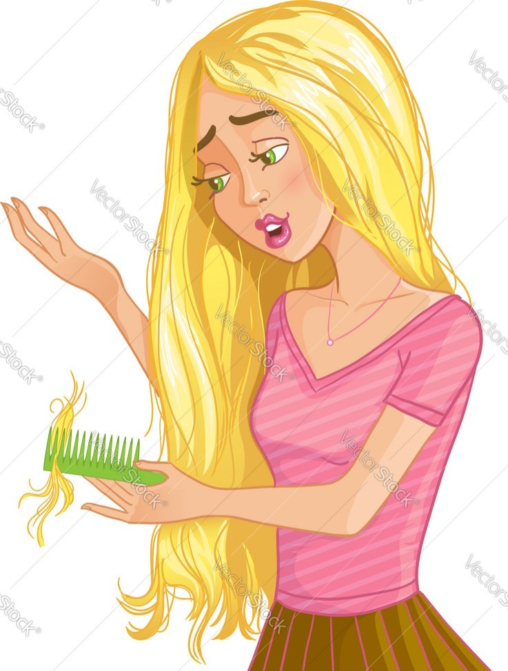

HAIRFALL
Symptoms

- Fast hair loss
- Receding Hairline
- Increased Hair Shedding
- Thinning Hair
- Bald Patches
- Changes in Hair Texture
SOLUTION
- Oil massage:Regularly massaging your scalp with oils like coconut, almond, or olive oil can improve blood circulation and strengthen hair.
- Aloe vera: Applying aloe vera gel to your scalp may help soothe and condition the hair, promoting growth.
- Onion juice:Rich in sulfur, onion juice might stimulate hair follicles. Apply and leave it on for 15-30 minutes before washing
- Green tea rinse:* Rinse your hair with green tea to reduce hair fall. Green tea is rich in antioxidants that can help promote hair growth.
SOLUTION FOR DANDRUFF
- Dilute a few drops of tea tree oil with a carrier oil (like coconut oil) and massage it into your scalp before shampooing.
- Massage warm coconut oil into your scalp, leave it on for at least 30 minutes, and then wash your hair.
- Apply aloe vera gel directly to your scalp, leave it on for 15-20 minutes, and then wash your hair.
- Boil neem leaves in water, strain the liquid, and use it as a hair rinse
- Soak fenugreek seeds in water overnight, grind them into a paste, and apply it to your scalp. Leave it on for 30 minutes before washing your hair.
SOLUTION FOR LICE
- Apply olive oil to the hair, covering the scalp and strands thoroughly. Cover the hair with a shower cap and leave it on overnight.
- Make a paste by mixing salt with vinegar. Apply it to the scalp, cover with a shower cap, and leave it on for a few hours before washing the hair.
- Crush garlic cloves and mix them with lime juice. Apply the mixture to the scalp and leave it on for 30 minutes before washing the hair.